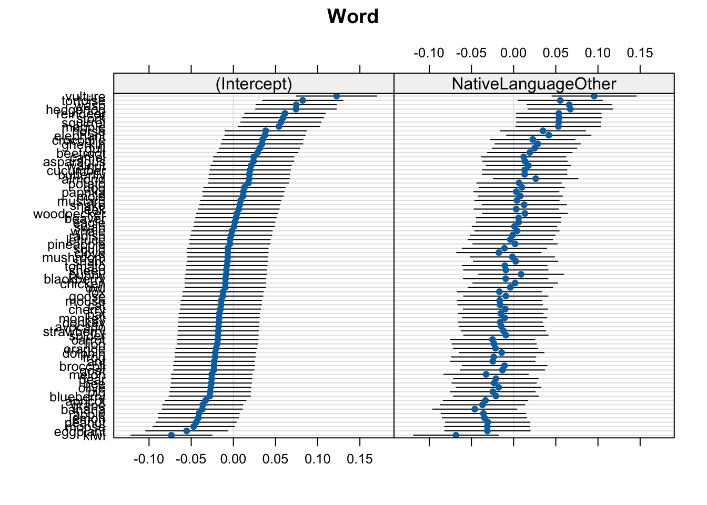
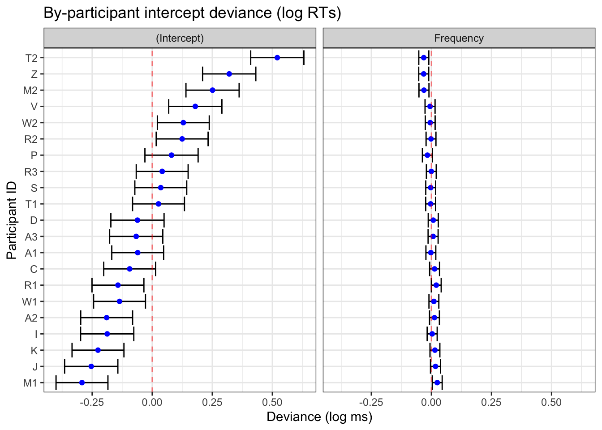

## install 'pacman' if you don't have it
# install.packages("pacman")
# p_load(): load or install all listed CRAN packages
pacman::p_load(
languageR, # for the example data
dplyr, # summarising our data
janitor, # for summarising our data
lme4, # fitting our model
lattice # for the caterpillar plots
)This blog post goes over how to produce visualisations of by-grouping factor (e.g., by-participant) varying intercepts and slopes.
Required packages for reproducible example:
Load repeated measures data
We’ll use some toy data.
df_lexdec <- languageR::lexdecCheck out the variable names:
names(df_lexdec) [1] "Subject" "RT" "Trial" "Sex"
[5] "NativeLanguage" "Correct" "PrevType" "PrevCorrect"
[9] "Word" "Frequency" "FamilySize" "SynsetCount"
[13] "Length" "Class" "FreqSingular" "FreqPlural"
[17] "DerivEntropy" "Complex" "rInfl" "meanRT"
[21] "SubjFreq" "meanSize" "meanWeight" "BNCw"
[25] "BNCc" "BNCd" "BNCcRatio" "BNCdRatio" Let’s look at the first few rows of some selected columns:
head(df_lexdec[c(1:5,9)]) Subject RT Trial Sex NativeLanguage Word
1 A1 6.340359 23 F English owl
2 A1 6.308098 27 F English mole
3 A1 6.349139 29 F English cherry
4 A1 6.186209 30 F English pear
5 A1 6.025866 32 F English dog
6 A1 6.180017 33 F English blackberryHow many participants?
length(unique(df_lexdec$Subject))[1] 21There are 21 participants in this dataset. How many unique words were there?
length(unique(df_lexdec$Word))[1] 79There are 79 words.
How many observations (rows) per participant?
df_lexdec |>
dplyr::count(Subject) |>
count(n, name = "Subject") n Subject
1 79 21We see that all 21 participants had 79 observations, i.e., this was a repeated measures design. This is nice and clean, as 79 x 21 equals the number of observations in the dataset (1659):
79*21 == nrow(df_lexdec)[1] TRUEThis means there are no missing values. Wouldn’t have been a problem for our model, but is good to know (and always good to double check).
Mixed effects model
We’ll ignore a lot of steps for the sake of simplicity here. Let’s fit a linear mixed model with log reaction times (RT) as predicted by word frequency (Frequency), with by-participant (Subject) and by-word (Word) varying intercepts and slopes.
mod_lexdec <-
lmer(RT ~ Frequency + NativeLanguage +
(1 + Frequency | Subject) +
(1 + NativeLanguage | Word),
data = df_lexdec,
control = lmerControl(optimizer = "bobyqa")
)First: note we have a single varying slope for participant and word each. The effect of Frequency is allowed to vary between participants because each participant contributed data points for words of different frequencies (presumably). The effect of NativeLanguage is allowed to vary between words because we have data points from different NativeLanguage levels (English, Other) for each word (presumably). Importantly, NativeLanguage does not vary within a single subject, nor does word frequency vary within a single word.
Inspect model
summary(mod_lexdec)Linear mixed model fit by REML ['lmerMod']
Formula: RT ~ Frequency + NativeLanguage + (1 + Frequency | Subject) +
(1 + NativeLanguage | Word)
Data: df_lexdec
Control: lmerControl(optimizer = "bobyqa")
REML criterion at convergence: -964.8
Scaled residuals:
Min 1Q Median 3Q Max
-2.3977 -0.6132 -0.1193 0.4740 6.2917
Random effects:
Groups Name Variance Std.Dev. Corr
Word (Intercept) 0.0017172 0.04144
NativeLanguageOther 0.0014730 0.03838 0.74
Subject (Intercept) 0.0462392 0.21503
Frequency 0.0003824 0.01956 -0.88
Residual 0.0288063 0.16972
Number of obs: 1659, groups: Word, 79; Subject, 21
Fixed effects:
Estimate Std. Error t value
(Intercept) 6.540876 0.060575 107.981
Frequency -0.039879 0.007122 -5.599
NativeLanguageOther 0.078591 0.054036 1.454
Correlation of Fixed Effects:
(Intr) Frqncy
Frequency -0.805
NtvLnggOthr -0.433 0.103In terms of fixed effects, we see a negative slope for Frequency, indicating shorter log reaction times for more frequent words. We see a positive slope for NativeLanguageOther, indicating longer log reaction times for participants whose first language was not English. We will not consider the size of these effects nor whether they’re “significant”.
Random effects
We can inspect just the random effects and the variance-covariance matrix:
VarCorr(mod_lexdec) Groups Name Std.Dev. Corr
Word (Intercept) 0.041439
NativeLanguageOther 0.038380 0.742
Subject (Intercept) 0.215033
Frequency 0.019556 -0.877
Residual 0.169724 We can get the divergence of each level of our grouping factors from the population-level estimates:
ranef(mod_lexdec)$Subject (Intercept) Frequency
A1 -0.06030431 -0.0022251255
A2 -0.18962004 0.0128083423
A3 -0.06664595 0.0072151844
C -0.09377251 0.0133606863
D -0.06141404 0.0077909999
I -0.18734788 0.0033222900
J -0.25375499 0.0171447631
K -0.22563195 0.0147162271
M1 -0.29229275 0.0244231510
M2 0.25110977 -0.0308968328
P 0.08034419 -0.0165141417
R1 -0.14261330 0.0203393705
R2 0.12464130 -0.0015903453
R3 0.04157428 -0.0002952847
S 0.03561165 -0.0028669061
T1 0.02619380 -0.0030887838
T2 0.52058557 -0.0316672952
V 0.17933015 -0.0055399270
W1 -0.13602827 0.0104647912
W2 0.12954541 -0.0049044182
Z 0.32048987 -0.0319967457head(ranef(mod_lexdec)$Word, n = 10) (Intercept) NativeLanguageOther
almond 0.018780910 0.026225728
ant -0.022568074 -0.024627285
apple -0.040907427 -0.035793135
apricot -0.032899686 -0.033362009
asparagus 0.023935099 0.013473767
avocado -0.017600540 -0.014486640
banana -0.036796340 -0.046064766
bat -0.016603440 -0.015256600
beaver 0.003163019 0.005906525
bee -0.026069500 -0.023041857I’ve printed just the first 10 words to avoid printing all 79. Notice the values consist of a mix of positive and negative values. This is because the population-level estimate (i.e., the fixed effects) lies in the middle of all the observations. These are the deviances, i.e., how each participant’s or word’s fitted intercept or slope value deviates from the population-level value.
We can also print the actual fitted values:
coef(mod_lexdec)$Subject (Intercept) Frequency NativeLanguageOther
A1 6.480572 -0.04210381 0.07859106
A2 6.351256 -0.02707035 0.07859106
A3 6.474230 -0.03266350 0.07859106
C 6.447103 -0.02651800 0.07859106
D 6.479462 -0.03208769 0.07859106
I 6.353528 -0.03655640 0.07859106
J 6.287121 -0.02273392 0.07859106
K 6.315244 -0.02516246 0.07859106
M1 6.248583 -0.01545554 0.07859106
M2 6.791986 -0.07077552 0.07859106
P 6.621220 -0.05639283 0.07859106
R1 6.398263 -0.01953932 0.07859106
R2 6.665517 -0.04146903 0.07859106
R3 6.582450 -0.04017397 0.07859106
S 6.576488 -0.04274559 0.07859106
T1 6.567070 -0.04296747 0.07859106
T2 7.061461 -0.07154598 0.07859106
V 6.720206 -0.04541861 0.07859106
W1 6.404848 -0.02941390 0.07859106
W2 6.670421 -0.04478311 0.07859106
Z 6.861366 -0.07187543 0.07859106head(coef(mod_lexdec)$Word, n = 10) (Intercept) Frequency NativeLanguageOther
almond 6.559657 -0.03987869 0.10481679
ant 6.518308 -0.03987869 0.05396378
apple 6.499968 -0.03987869 0.04279793
apricot 6.507976 -0.03987869 0.04522905
asparagus 6.564811 -0.03987869 0.09206483
avocado 6.523275 -0.03987869 0.06410442
banana 6.504080 -0.03987869 0.03252630
bat 6.524272 -0.03987869 0.06333446
beaver 6.544039 -0.03987869 0.08449759
bee 6.514806 -0.03987869 0.05554921Note that these are now much closer to the fixed effects (population-level values). Importantly, see that the slopes that we did not allow to vary are the same across the relevant grouping factor. That’s because we told our model that these effects do not vary between the levels of the relevant grouping factors (e.g., the effect of NativeLanguage does not vary within participant).
Visualisng random effects
Finally, the point of this blog post: visualising the random effects.
Print just the by-subject random effects deviances:
dotplot(ranef(mod_lexdec))$SubjectPrint just the by-word random effects:
dotplot(ranef(mod_lexdec))$Word
In these plots, 0 on the x-axis corresponds to the population-level values. So, the (Intercept), 0 corresponds to the intercept value in the model coefficients (6.5408759):
fixef(mod_lexdec) (Intercept) Frequency NativeLanguageOther
6.54087589 -0.03987869 0.07859106 Caterpillar plot with ggplot2
We could also produce these plots by hand. For this we’ll use the broom.mixed package.
pacman::p_load(
ggplot2,
broom.mixed
)fig_res_dev <-
# produce tidy table of random effects
broom.mixed::tidy(mod_lexdec, effects = "ran_vals", conf.int = TRUE) |>
# by-Subject only
filter(group == "Subject") |>
# begin plotting
ggplot() +
aes(x = estimate, y = reorder(level, estimate)) +
labs(title = "By-participant intercept deviance (log RTs)",
y = "Participant ID",
x = "Deviance (log ms)") +
geom_vline(xintercept = 0, colour = "red", linetype = "dashed") +
geom_point(colour = "blue") +
geom_errorbar(
aes(xmin = conf.low,
xmax = conf.high)
) +
facet_grid(~term) +
theme_bw()fig_res_dev

broom.mixed::tidy() and ggplot2